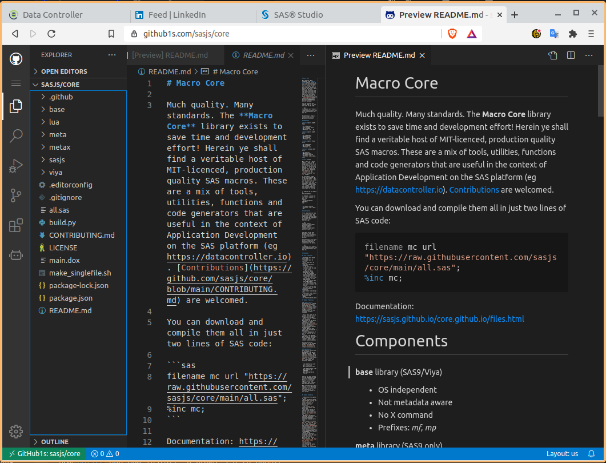

VS Code - for SAS¶
VS Code is the worlds best IDE! At least, that's our opinion. It's a great IDE and very usable for both SAS and Web development. When it comes to the download, we actually recommend VSCodium - which is simply VSCode without the telemetry.
Extensions¶
VS Code has many marketplace extensions - these are our favourites:
SASjs¶
Using the SASjs extension in the VS Code marketplace you can:
- submit code to SAS (Viya, EBI or Base SAS) and return the log. This uses the regular global sasjsconfig file, so the tokens generated can be reused between VS Code and the SASjs CLI.
- Lint your SAS code (open view/problems to see the results, or CTRL+M)
- Enjoy syntax highlighting
The extension is available both on the VS Code market place and also open VSX (suitable for VSCodium and Theia).

You can also auto-format your SAS code by right-clicking and selecting 'format':
The SASjs VS Code extension is MIT Open Source and free for commercial use.
Gremlins Tracker¶
When sharing code from one environment (eg UTF8) to another (eg WLATIN1) you can end up with code that will not run in EG due to the existence of hidden special characters.
This plugin will highlight all the rows containing such 'gremlins'. A real time saver / problem avoider!
Draw IO¶
This extension lets you build diagrams directly in VS Code! You can save as PNG or SVG, and changes are stored as text so you can track them in GIT.
https://marketplace.visualstudio.com/items?itemName=hediet.vscode-drawio

Journal¶
This is actually two extensions. The first lets you use VS Code as a task manager and work diary. The second adds a calendar icon to the left hand side of your IDE so you can easily browse!
Tips & Tricks¶
Keyboard shortcuts¶
10x your productivity by committing the following to memory:
| Shortcut | Result |
|---|---|
| CTRL+ALT + up or down arrow | Multiline select with the cursor |
| CTRL+SHIFT+P | Bring up the command pane |
Gitpod¶
Instant workspace in the cloud! Just add "gitpod.io/#" prior to the url, like this: "gitpod.io/#github.com/sasjs/core".
A great demo of the SASjs CLI is available here: https://gitpid.io/#github.com/sasjs/template_jobs.
Github Viewer¶
Are you trying to read code on github, but find it cumbersome to navigate each page?
Just add "1s" in the url between "github" and ".com" - like this: "github1s.com/sasjs/core"
And get instant VS Code in the browser!
